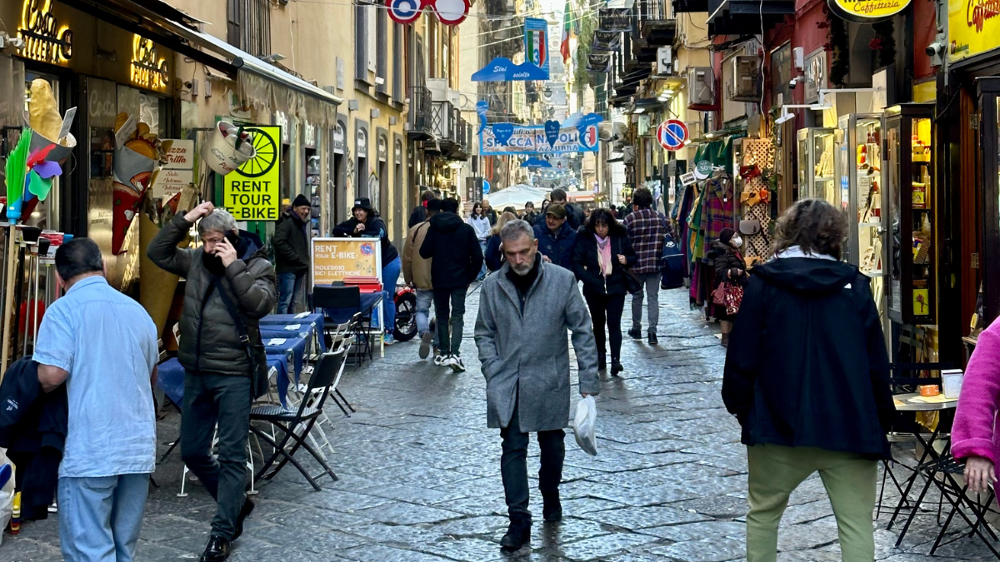

1. Spaccanapoli y el Centro Histórico
La calle que divide el centro antiguo de Nápoles de norte a sur. Pasear por sus estrechas callejuelas es sumergirse en la verdadera alma napolitana: ropa tendida, altares, iglesias y el olor a pizza.
La ciudad más apasionada y auténtica de Italia
Pizza, Vesubio, arte y un alma única en el sur de Italia
Nápoles es caos organizado, historia milenaria, pasión y sabor. Capital de la región de Campania, es famosa por su pizza, el Vesubio, las ruinas de Pompeya y un centro histórico declarado Patrimonio de la Humanidad por la UNESCO.

La calle que divide el centro antiguo de Nápoles de norte a sur. Pasear por sus estrechas callejuelas es sumergirse en la verdadera alma napolitana: ropa tendida, altares, iglesias y el olor a pizza.

La plaza más elegante de Nápoles. Rodeada por la Basílica de San Francesco di Paola y el Palacio Real, es el corazón monumental de la ciudad.
Ideal para tomar fotos y sentir la grandeza de la ciudad.

Dedicada a San Genaro, patrono de la ciudad. En su interior se guarda la famosa Ampolla de la Sangre de San Genaro, que se licua milagrosamente tres veces al año.

El castillo más antiguo de Nápoles, situado en una pequeña isla frente al mar. Ofrece vistas increíbles del Golfo de Nápoles y es perfecto para pasear al atardecer.

¡La auténtica pizza nació aquí! Visita lugares históricos como Da Michele, Sorbillo o Starita. La Margherita y la Marinara son imprescindibles.
No te vayas de Nápoles sin probar al menos dos pizzas auténticas.

El volcán más famoso del mundo, que destruyó Pompeya y Herculano en el año 79 d.C. Se puede subir hasta el cráter y disfrutar de vistas panorámicas impresionantes.

Las ciudades romanas mejor conservadas del mundo. Una visita obligada para entender la historia de la región. Pompeya es más grande y famosa, mientras que Herculano está mejor preservada.

Una impresionante galería comercial del siglo XIX con una hermosa cúpula de vidrio y hierro. Es un ejemplo magnífico de arquitectura neoclásica.
“Nápoles es una ciudad que se siente con el corazón y se saborea con el alma.”